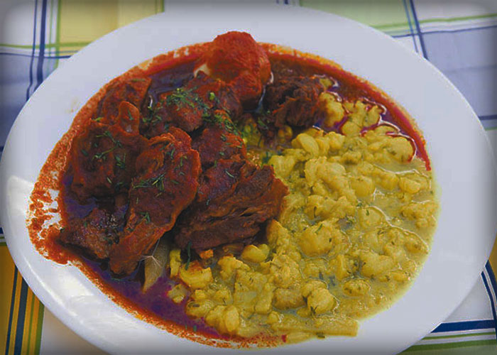

PLATO PACEÑO
PLATO PACE√ëO5 libras haba con cáscara (para tres platos), 1/2 kg. De carne (bife, pulpa, bistec), 6 papas (para tres platos), 6 choclos, 1 queso, 1 botellita soya, Azúcar, Para la llajua (aji picante) :, 1/2 libra tomate, 2 locotos (picante üå∂).
preparacion:..Paso a paso
1
Lavar bien la haba sin pelar y sin sacar de la cáscara y colocar en una olla con agua y hacer hervir (mejor si es en olla a presión)
2
Lavar la papa y no pelar, mejor si es papá con cáscara roja, colocar en una olla con agua (mejor si es en olla a presión)
3
Para el choclo o ma√≠z üåΩ, en una olla mejor si es a presi√≥n, 2 litros de agua y agregar azúcar, 2 cucharas y media por litro de agua. Una vez que el agua est√© hirviendo reci√©n colocar el ma√≠z o choclo, y hacer cocer por lo menos 40 minutos
4
Para la carne, yo lo ablando con papaya, colocando una capa de papaya y luego al sartén con salsa soya, pimienta, y comino al gusto, cocinar a fuego lento o mínimo para que salga jugo de la carne
5
Con el mismo jugo de la carne, cocinar dos tiras de queso üßÄ
 MAJAO
MAJAOIngredientes:.. 5 tazas de Agua, ½ kilogramo de Charque, 1 taza de Arroz, ½ taza de Cebolla picada fina (sin lavar), ½ taza de Tomate pelado y picado fino, ¼ cucharilla de Sal, ½ taza de Aceite, 4 Semillas de urucú (achiote) remojadas en agua, ½ taza de Agua o caldo; 1 cucharilla de Sal; ½ Plátano de cocinar frito, por personas; 2 Tajadas yuca cocida y frita, por persona, 1 Huevo frito, por persona.
preparacion:..
Paso 1 :
Poner en una olla las cinco tazas de agua, cuando esté hirviendo agregar el charque y dejar cocer hasta que esté suave, sacar, martajar y desmenuzar.
Paso 2 :
Al agua donde hirvió el charque anadir el arroz y la sal, dejar cocer a fuego moderado por veinticinco minutos más o menos hasta que esté muy bien cocido, pero no seco.
Paso 3 :
Poner en una cacerola pequeña a fuego fuerte la cuarta taza de aceite, agregar el charque desmenuzado, freír hasta que esté dorado y sacar del fuego.
Paso 4 :
Poner la cuarta taza de aceite restante a fuego fuerte en una cacerola, agregar la cebolla, dejar dorar un rato, añadir el tomate, luego agregar el color del urucú colado, agua o caldo y la sal. Dejar cocer unos cinco minutos, poner el charque frito, mezclar y agregar a la olla del arroz, mezclar todo, no debe quedar seco.
Paso 5 :
Servir caliente, con el huevo frito encima, el medio plátano frito y la yuca tambien frita.

FRITANGA
Ingredientes: 3 k carne de cerdo, 200 grs chuño remojado (papa remojada), 400 grs maíz pelado cocido, 400 grs papa, 150 grs ají colorado molido, 2 cucharitas pimienta, 1 cucharilla comino, 1 cabeza ajo, c/n sal.
Ingredientes: 3 k carne de cerdo, 200 grs chuño remojado (papa remojada), 400 grs maíz pelado cocido, 400 grs papa, 150 grs ají colorado molido, 2 cucharitas pimienta, 1 cucharilla comino, 1 cabeza ajo, c/n sal.
preparacion:..Paso a paso
1
Trazar la carne de cerdo y cocinar en agua con la pimienta, el comino, el ajo molido y sal al gusto.
2
Una vez cocido separe na carne de cerdo del caldo y conservar el caldo.
3
Una vez enfriado en cerdo freírlo con un poco de aceite o en su propia grasa.
4
Aparte mezclar 2 tazas de caldo donde coció el cerdo con el ají colorado.
5
En la salsa elaborada anteriormente incluir el cerdo y dejar cocer por 15 minutos.
6
Pele y haga cocer las papas, el chuño y el maíz por separado.
7
Sirva la carne de cerdo con la salsa encima acompañado con la papa, el chuño y el maíz.
8
TIPS: si en su país no con sigue chuño acompañar solo con papa y maíz.
SILPANCHO
Ingredientes:.. 700 gramos de carne molida o filete de ternera 300 gramos de pan rallado, 4 papas medianas, 2 tomates, 1 pimiento rocoto o habanero, 1 cebolla morada mediana, 1 pimiento verde, 200 gramos de arroz (opcional), 4 huevos, 1 chorro de aceite para freir, 1 chorro de vinagre, 1 pizca de sal, 1 pizca de pimienta, 1 pizca de comino.
Ingredientes:.. 700 gramos de carne molida o filete de ternera 300 gramos de pan rallado, 4 papas medianas, 2 tomates, 1 pimiento rocoto o habanero, 1 cebolla morada mediana, 1 pimiento verde, 200 gramos de arroz (opcional), 4 huevos, 1 chorro de aceite para freir, 1 chorro de vinagre, 1 pizca de sal, 1 pizca de pimienta, 1 pizca de comino.
preparacion:..
1 Lava bien la papa y quítale la piel con un pelador de papas. Colócala en una olla con suficiente agua y agrega un punto de sal. Hiérvela durante unos 20 minutos, hasta que esté cocida, pero firme. Luego colócala en el refrigerador para que se enfríe, mientras preparas lo demás.
2 Cocina el arroz con tu método favorito, lo importante es que –una vez cocido- completes dos tazas. Si lo deseas, puedes tenerlo preparado desde el día anterior.
3 Adoba los bistecs con el adobo. En un plato plano, extiende el pan rallado. Coloca 1/4 de taza de aceite en una sartén mediana, a fuego medio. Pasa los bistecs por el pan rallado, presionando cada lado hasta cubrirlos uniformemente. Cuando el aceite esté caliente, cocínalos durante 1 1/2 minutos de cada lado, o hasta que los extremos estén dorados. Ten cuidado con cocinarlos demasiado, ya que el pan rallado se dora con facilidad.
4 Cuando estén listos, pásalos por una servilleta de papel para quitar el exceso de grasa. Mantenlos tibios.
5 Lava y pica la cebolla en cubos pequeños y déjala a un lado. Abre la lata de tomates, escúrrelos en un colador y calcula 1 taza.
6 Saca la papa del refrigerador y pícala en rodajas de 1/2 pulgada, aproximadamente. En un sartén anti-adherente, coloca el otro 1/4 de taza de aceite, a calentar a fuego medio alto. Cuando el aceite esté caliente, coloca las papas y fríelas durante aproximadamente dos minutos de cada lado, o hasta que estén doradas. Colócalas sobre servilletas de papel para absorber el aceite.
7 Mientras fríes las papas, rocía con aceite en spray una sartén pequeña, y fríe los huevos a tu gusto, condimentando con sal y pimienta.
8 Una vez listas las papas, el arroz, los bistecs, y los huevos, procede a armar el Silpancho.
9 Coloca una taza de arroz extendida sobre un plato, luego el bistec, y luego el huevo frito. Alrededor, coloca los tomates y las cebollas en cubos y de un lado, agrega 3 a 4 rodajas de papas. Esparce perejil picado en cada plato y ¡buen provecho!